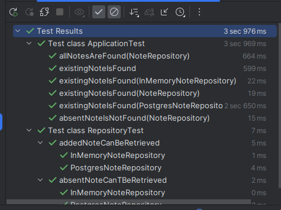

Persistence in Testing
and how you can deal with it nicely.
The problem
When you either know me a bit or when you read my previous posts, you might get the impression that I prefer testing with real dependencies. God damn right. And persistence makes no difference.
But on the other hand, I was part of many teams that severely struggled dealing with persistence when it comes to testing. The proper mindset and suitable tooling will work wonders for your tests. On the JVM, the tooling is already right there. Other platforms might need to catch up first. For example in the nodejs projects I worked, I experienced at least two bigger issues: The testcontainers for nodejs library was buggy and the test frameworks didn't offer good enough extension points to implement painlessly what is needed. Well, what can I say. Switch to the JVM or some comparable ecosystem if you want good things :shrug:. Jk.
Whether it's a repository class, an interface, a database client, a wrapper for a database client, a http facade for a database, one way to deal with it is always found quickly: mocking. There's next to no requirements to be able to switch out a persistence layer by some cheap mocks. Despite in some few cases no big deal, mocking is not a versatile solution:
- Mocks are a special form of test doubles, they should be used for verification, but often they aren't. They should often rather be stubs or fakes.
- Mocking is always done with a framework, the mock definitions are often quite cryptic and span multiple lines of code. This blows up test code and prevents tests from being like a readable documentation.
- Mocks that go further then the most simple cases get very hard to read quickly.
- Mocks never implement the contract of whatever they mock, by definition. This is simply a risk, because your code uses sth. that's not compliant to whatever the real thing is. And the test needs to be adapted for that, even if often this is not obvious (I have an example at the bottom).
- Classic mocking is ad-hoc, declared as near as possible to the usage site, so often in the test method itself. Theoretically, one can abstract one's mocks and make them reusable, but that's often an approach that surprises people and I experienced that it's seen as inappropriate, no good style. So the same mocking is repeated in many spots. It's simply duplicated code. We don't need to make a big deal out of it, but just being used to something doesn't meake it good in particular.
The solution
Read my previous post about testing with the real filesystem for further details. The reasons people replace real dependencies can often be invalidated quite easily. For persistence, the primary reason people don't use the real database is either because they never heard about testcontainers and how easy it is use a docker container in arbitrary scopes or because they think the stuff is too slow (or they use a mid tech stack, like mentioned in the intro...).
I created a repository at https://github.com/hannomalie/testing-with-repositories to showcase how little there is to those arguments, how easy and fast it is to use some tiny abstractions or the real dependencies in tests.
In-memory implementation
This is really a too fancy name for a really dumb implementation. Implement your repository interface and back it by a simple data structure.
class InMemoryNoteRepository implements NoteRepository {
private final ArrayList<Note> notes = new ArrayList<>();
@Override
public Optional<Note> find(Integer id) {
return notes.stream().filter(it -> it.id() == id).findFirst();
}
@Override
public void add(Note note) {
notes.add(note);
}
@Override
public List<Note> getAll() {
return new ArrayList<>(notes);
}
@Override
public void addAll(Note... notes) {
Arrays.stream(notes).forEach(this::add);
}
}
The important thing: Make it a proper implementation, that doesn't only implement the interface, but also fulfills all other elements of the contract of the repository. Those are usually quite implicit and oftentimes just a bunch of "obvious" things. For exmaple when you add something to the repo, it should be able to retrieved afterwards. Make that a test and test the in-memory, as well as the proper implementation. It's doable with close to no effort, take a look at this example, how concise it can be:
@TestFactory
List<DynamicTest> absentNoteCanTBeRetrieved(
InMemoryNoteRepository inMemoryNoteRepository,
PostgresNoteRepository postgresNoteRepository
) {
return Stream.of(inMemoryNoteRepository, postgresNoteRepository).map(repository -> {
repository.add(new Note(5, "asd"));
return dynamicTest(repository.getClass().getSimpleName(), () -> {
assertThat(repository.find(4)).isEmpty();
});
}
).toList();
}
Believe it or not, now you have a fully compliant implementation. That means you can freely use it in all of your tests, prevent all the issues you get when mocking and have all the benefits that make a good test: speed, test reads like a documentation, you don't have to create ad-hoc implementations, you don't create coupling between tests and implementation and so on. Additionally, you can use this implementation for local development, bootstrapping your application will be a breeze, enabling usecases like fast prototyping, enables your testers to start a stack easily and so on.
Usage in tests
I don't really need to show you the "real" implementation, you know how that looks because you have that stuff yourself.
In my example code repo, I deliberately chose to not use Spring. Spring might be a fantastic solution for multiple reasons, but it's also quite implicit, hiding a lot of things behind dependencies and default configuraitons. That's not helpful to show simplicity from my pov. So I went closer to the bare minimum of a solution I would consider production ready: Javalin, JDBI, Hikari (Connection pooling...), a Repository interface and Postgres.
A test can look as simple as this:
@ExtendWith(NoteRepositoryExtension.class)
public class ApplicationTest {
@Test
void existingNoteIsFound(PostgresNoteRepository repository) {
repository.addAll(new Note(0, "asd"), new Note(1, "ftz"), new Note(2, "jek"));
JavalinTest.test(createApp(repository), (server, client) -> {
assertThat(client.get("/notes/2").code()).isEqualTo(200);
});
}
}
Note, that I am actually creating an instance of the whole Javalin application and test it with an http client by calling routes.
The PostgresNoteRepository is the implementation of a repository interface that uses a real datasource, JDBI as a simple mapper between the persistence and the data classes. When you normally use testcontainers to start your real postgres database, it would look similar to sth like this. That can be sufficient, but is a bit unergonomic. One probably wants to have it a bit less boilerplatey, a bit smoother. In Kotlin, there are some helpful language constructs like lambdas with receivers to help you write some tiny DSL to make it a bit nicer. It's possible in Java as well, but on the other hand JUnit has also some nice spots to implement what we need. So I went for a JUnit extension that is an implementation of an afterEach handler and a parameter resolver. The implementation is quite simple, could be even simpler (container shutdown could be left over for testcontainers, container start could be in parameter resolve function) and took me not even half an hour to implement. Take a look at the class here.
You might have spotted another detail. There is a configuration parameter "preferInMemory" in the extension. In case your test only requires the interface type of the repository, which implementation should be passed in? The in-memory one? The real one? The point is, it depends on what you want to achieve. When it's really important for developers to have tests as fast as possible, because they need it for their workflow (do they really?), make in-memory the default that gets passed in. In your CI pipeline, you could use the real ones for all scenario tests. Or only on the main branch, not on your feature branch pipelines, it's really up to everyone and their requirements and needs. I just wanted to show how easy it is to create a mechanism that helps achieving any of those usecases.
Speed
Not much to add after the previous chapter. The "ApplicationTest" test file contains all the different scenarios you could be interested in: Inject the interface, inject the real implementation, inject the in-memory variant.
Here are some test results:

I have to admit, I don't know why that one test takes 2s, but I suspect it has sth to do with the code in that test. Nonetheless, look how all those tests don't even run 4 seconds. They're not yet using parallel execution and they are using a bunch of real databases. Adding some "slow" tags to your tests and using the configuration flag mentioned above, there could barely be any reason to complain about the approach. What's additionally quite interesting though is: You see the "existingNoteIsFound" test without any parameters? It's using mocks. It's using mockito, which looks like this:
@Test
void existingNoteIsFound() {
var repository = mock(NoteRepository.class);
when(repository.find(2)).thenReturn(Optional.of(new Note(2, "jek")));
JavalinTest.test(createApp(repository), (server, client) -> {
assertThat(client.get("/notes/2").code()).isEqualTo(200);
});
}
I know, everyone is tired of me complaining about mocking, but three things need to be stated. 1: Performance wise, they are unexpectedly expensive. And no, it's not coincidence, I ran that stuff multiple times. 2: It's easy to overlook that I created coupling between implementation and test. The test assumes that the application calls the find method on the repository. Sure, it would be dumb to call getAll() and then filter the results, but the issue in general gets clear and it is very well relevant in real projects with real implementations. 3: It's already slightly less readable than the alternatives and the test needs to be careful to not rely on the contract of our repositories. For example the house of cards would already collapse when your test wants to call .post("/notes") in its scenario.
Closing words
It doesn't cost you much to ramp up your testing game by a lot. Starting with in-memory implementations, followed by using testcontainers, finalized by a small test framework extension. Combine it with a web framework that doesn't impose any structure of tests (like Spring does, for example) and use a simple approach to persistence in general (like JDBI) and your code becomes lean, fast and pretty. Much like I motivated in an earlier blog post, there is less and less reason to think about whether a test is a unit test or not when it uses a repository, which helps focusing just on what one actually wants to test.